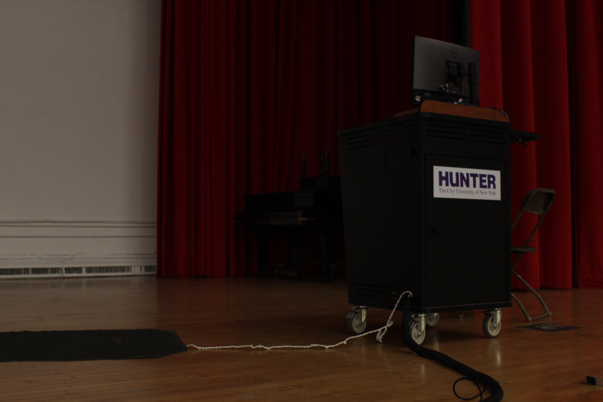

Depth of Field Assignment
Shallow Depth of Field (In-Camera)
Before Camera Raw
After Camera Raw
Deep Depth of Field (In-Camera)
Before Camera Raw
After Camera Raw

Field Blur (Photoshop)
Before Field Blur

After Field Blur
Back to Homepage